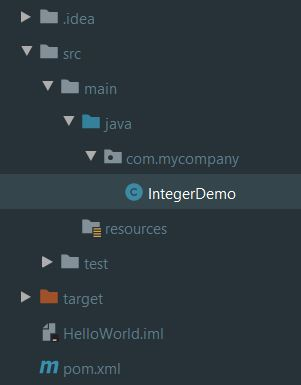

Ο κύριος λόγος που χρησιμοποιούμε όχι μόνο την Java αλλά
και οποιαδήποτε γλώσσα προγραμματισμού, είναι
για να μπορούμε να εκτελούμε αριθμητικές πράξεις πολύ γρήγορα.
Για να μπορέσουμε να πετύχουμε το επιθυμητό αποτέλεσμα,
θα πρέπει πρωτίστως να περάσουμε στην
Java κατά κάποιο τρόπο τις τιμές που θέλουμε
να συμπεριληφθούν στις πράξεις και δευτερευόντως
να ορίσουμε την μαθηματική φόρμουλα στην οποία θα
λάβουν μέρος οι αριθμοί. Για να μπορέσουμε να ορίσουμε
τιμές μέσα σε ένα πρόγραμμα Java, έχουμε δημιουργήσει
την έννοια της μεταβλητής (variable).
Η γενική μορφή ορισμού μιας μεταβλητής
είναι: type var-name; όπου type είναι το
είδος της τιμής (integer, boolean, float, κτλ)
που μπορεί να δεχτεί η μεταβλητή ενώ το var-name
είναι το πως θα ονομάσουμε την μεταβλητή μας.
Φυσικά έχουμε την δυνατότητα να αρχικοποιήσουμε
την μεταβλητή μας με κάποια τιμή ασχέτως αν αργότερα
κατά την εκτέλεση της εφαρμογή μας η μεταβλητή μπορεί
να δεχτεί διαφορετική τιμή. Η γενικότερη φόρμουλα για
να ορίσουμε αρχική τιμή είναι: type var = value;
Πριν δούμε ένα συγκεκριμένο παράδειγμα, πρέπει να αναλύσουμε
λίγο περισσότερο την έννοια του type. Τα data types
στην Java είναι πολύ σημαντικά γιατί πολύ απλά η Java
θεωρείται strongly typed γλώσσα προγραμματισμού. Αυτό σημαίνει
ότι πρέπει αρχικά να ορίσουμε τις μεταβλητές και τις
τιμές που θα δέχονται πριν ακόμα τις καλέσουμε μέσα
στην εφαρμογή μας.
Η Java αποτελείται από δύο μεγάλες κατηγορίες data types:
εκείνες των αντικειμένων και εκείνες των μη
αντικειμένων. Στη σημερινή ενότητα, και σε
μερικές επόμενες, θα ασχοληθούμε με την κατηγορία
των μη-αντικειμένων data types που αλλιώς ονομάζονται
primitive. Ονομάζονται έτσι γιατί κυρίως χρησιμοποιούνται σαν
local μεταβλητές και όχι σαν μεταβλητές αντικειμένων.
Η έννοια αυτή θα είναι πιο ξεκάθαρη όταν μιλήσουμε
για αντικείμενα. Συνολικά λοιπόν έχουμε οκτών
διαφορετικά είδη primitive data types όπως δείχνει και ο πιο κάτω πίνακας.

Για την εφαρμογή της θεωρίας, ας δημιουργήσουμε ένα καινούργιο
Java Project με το όνομα IntegerTheory που θα περιέχει ένα
πακέτο με το όνομα com.mycompany και μια κλάση με το όνομα
IntegerDemo. Μέσα στην κλάση θα πρέπει να δημιουργήσετε και
την main μέθοδο έτσι ώστε να μπορεί το πρόγραμμα μας να είναι
εκτελέσιμο. Μπορείτε επίσης να προσθέσετε ένα μήνυμα σε μια
println( ) μέθοδο για να το δοκιμάστε. Όταν τελειώσετε το
project σας και ο κώδικας σας θα πρέπει να είναι παρόμοιος
με αυτό της εικόνας και του κώδικα αντίστοιχα.

IntegerDemo.java
package com.mycompany;
public class IntegerDemo {
public static void main(String []args ){
System.out.println("This is an Integer Demo application");
}
}
Ένα χρήσιμο στοιχείο που κάθε επαγγελματικός κώδικας πρέπει
να περιέχει είναι τα σχόλια. Τα comments όπως αναφέρονται
στην Java δεν εμφανίζονται κατά την εκτέλεση του
προγράμματος. Η χρησιμότητα τους όμως είναι σημαντική
γιατί εξηγούν τις βασικές λειτουργίες του κώδικα και
δίνουν βοήθεια σε έναν προγραμματιστή να εξοικειωθεί
με τον κώδικα σε μικρό χρονικό διάστημα. Αν θέλουμε
να προσθέσουμε ένα σχόλιο σε μία μόνο γραμμή κάθε φορά
τότε χρησιμοποιούμε τα σύμβολα //, ενώ για να γράψουμε
πχ μια παράγραφο που δίνει μια συνοπτική εικόνα του
προγράμματος τότε ξεκινάμε το σχόλιο μας με /* και
το κλείνουμε με */. Ας προσθέσουμε μερικά σχόλια
στον κώδικα μας.
IntegerDemo.java
/*
Αυτό το πρόγραμμα μας δείχνει την σωστή χρήση
των Integer μεταβλητών
*/
package com.mycompany;
public class IntegerDemo { //κύρια κλάση του προγράμματος
public static void main(String []args ){ // Αρχή εκτελέσιμου κώδικα
System.out.println("This is an Integer Demo application"); //Μήνυμα στην κονσόλα
}
}
Στην σημερινή δωρεάν ενότητα της
Java θα μιλήσουμε για τα integer data types. Αλλά πριν
από αυτό πρέπει να δούμε ποιος είναι ο σωστός τρόπος να ορίσουμε μια
μεταβλητή. Βασικά στην Java ένα όνομα στο οποίο αναθέτουμε τιμές μπορεί
να θεωρηθεί σαν μεταβλητή. Τα ονόματα των μεταβλητών μπορούν να έχουν
όσους χαρακτήρες θέλουμε. Ο πρώτος χαρακτήρας επιτρέπεται να είναι γράμμα,
underscore ( _ ) ή το σύμβολο του δολαρίου ( $ ), ενώ από τον δεύτερο
χαρακτήρα και μετά μπορούμε να χρησιμοποιήσουμε και αριθμούς.
Αυτά είναι μερικά παραδείγματα ονομάτων που είναι έγκυρα στην Java:
Welcome, _welcome, $Welcome, Welcome1
ενώ δεν μπορούμε να έχουμε ονόματα όπως:
my name, 1Welcome
Στην Java υπάρχουν μερικές λέξεις-κλειδιά που έχουν προκαθορισμένη
σημασία και λειτουργία οπότε δεν μπορούμε να τις χρησιμοποιήσουμε
σαν ονόματα των δικών μας μεταβλητών.

Οι δύο λέξεις κλειδιά const και goto δεν
χρησιμοποιούντα επί του παρόντος αν και ανήκουν στις reserve λέξεις της Java.
Με την εισαγωγή του module system στην Java 9,
εμφανίστηκαν ακόμα 10 καινούργιες λέξεις κλειδιά ( ή reserved keywords
όπως τα λέμε συνήθως) τις οποίες δεν μπορούμε να χρησιμοποιήσουμε σαν
ονόματα μεταβλητών και είναι οι εξής:
open, module, requires, transitive, exports, opens, to,
uses, provides, και with.
Τώρα που ορίσαμε τι είναι μεταβλητή και ποια ονόματα
μπορούμε να χρησιμοποιήσουμε για να την ορίσουμε,
μπορούμε να μιλήσουμε για τους ακέραιους αριθμούς
στην Java. Υπάρχουν τέσσερα διαφορετικά είδη τα οποία είναι:

Όπως παρατηρούμε στον πίνακα, το εύρος των
αριθμών που καλύπτει κάθε data type περιέχει
και αρνητικούς και θετικούς αριθμούς. Η Java
δεν υποστηρίζει (unsigned) θετικούς μόνο αριθμούς
όπως ίσως συμβαίνει σε άλλες γλώσσες προγραμματισμού.
Το πιο συνηθισμένο integer data type είναι το int. Βασικά δεν
είναι μόνο το πιο συνηθισμένο αλλά είναι και το default data
type της Java στους ακέραιους. Αυτό σημαίνει ότι η Java πάντα
προσπαθεί να μετατρέψει τους ακέραιους αριθμούς σε int εκτός και
αν εμείς ορίσουμε κάποιο άλλο data type. Αυτή την συμπεριφορά θα
την δούμε σε λίγο με ένα παράδειγμα.
Όσο αφορά τους long ακέραιους, αυτοί εκτός από το
οριστούν σαν long χρειάζονται επιπλέον και το γράμμα L να
προστεθεί στο τέλος του αριθμού.
Αυτό που έχει απομείνει είναι να δούμε πως ορίζουμε μια
μεταβλητή με integer data type. Χρειάζεται λοιπόν
πρώτα να ορίσουμε το data type, μετά το όνομα της
μεταβλητής και τέλος είτε κατά τον ορισμό είτε μέσα
στον κώδικα να της αναθέσουμε μια τιμή με το = σύμβολο.
Έχουμε την δυνατότητα λοιπόν να πούμε:
int x;
x = 5;
ή να δώσουμε την τιμή στην ίδια γραμμή που δηλώνουμε την μεταβλητή:
int x = 5;
Επίσης έχουμε την δυνατότητα να ορίσουμε πολλαπλές μεταβλητές του ίδιου είδους στην ίδια γραμμή:
int x1 = 5, x2 = 10;
Μην ξεχάσετε να τελειώνετε την δήλωση των μεταβλητών με semicolon
( ; ) γιατί αυτό απαιτεί η Java. Ας δούμε λοιπόν ένα ολοκληρωμένο πρόγραμμα.
IntegerDemo.java
package com.mycompany;
public class IntegerDemo {
public static void main(String[] args) {
int x = 250;
System.out.println("x is " + x);
short a, b, c;
c = 21;
b = 9;
a = (short) (b + c);
System.out.println("a is " + a);
long y = 12345678987654321L; //notice the “L”
System.out.println("y is " + y);
int max = Integer.MAX_VALUE; // Assigns maximum int value to max
int min = Integer.MIN_VALUE; // Assigns minimum int value to min
System.out.println("The maximum value is: " + max);
System.out.println("The minimum value is: " + min);
}
}
Console Output
x is 250
a is 30
y is 12345678987654321
The maximum value is: 2147483647
The minimum value is: -2147483648
Ας δούμε τώρα αναλυτικά τον κώδικα μας. Εξ αρχής ορίζουμε
μια μεταβλητή με το όνομα x να είναι είδος int
και της αναθέτουμε την τιμή 250. Στην αμέσως επόμενη
γραμμή ζητάμε να δούμε την τιμή της μεταβλητής x.
Όπως παρατηρείτε στην println( ) μέθοδο, έχουμε
συνδυάσει ένα μήνυμα (“x is”) με μια μεταβλητή
x είδος int. Εδώ το σύμβολο + δεν δηλώνει πρόσθεση
αλλά concatenation δηλαδή θα “κολλήσει” δίπλα στο
μήνυμα την τιμή με την οποία ισούται η μεταβλητή.
Για αυτό και έχουμε αφήσει ένα κενό ανάμεσα στο
is και τα double quotes.
Έπειτα ορίσουμε τρεις μεταβλητές a, b και c
να είναι είδος short. Ενώ θα περιμέναμε το
αποτέλεσμα της πρόσθεσης να είναι short στην
πραγματικότητα δεν είναι. Ο λόγος είναι γιατί
η Java δεν γνωρίζει ότι η πρόσθεση του αριθμού
21 και του αριθμού 9 είναι μέσα στα όρια του
short (16 bit) οπότε, για να προστατέψει το
πρόγραμμα και να μην χάσει σε ακρίβεια, αυξάνει
αυτόματα το data type του αποτελέσματος σε int.
Η μεταβλητή a όμως περιμένει short αποτέλεσμα
οπότε το πρόγραμμα μας δεν θα τρέξει. Αυτό που
χρειάζεται να κάνουμε είναι να ενημερώσουμε την
Java ότι θα πάρουμε εμείς την ευθύνη και θα κάνουμε
casting το αποτέλεσμα της πρόσθεσης πίσω σε short.
Τώρα έχουμε ένα short αποτέλεσμα που το αναθέτουμε
σε short μεταβλητή.
Μετά ορίζουμε μια Long μεταβλητή. Απλά προσέξτε στο τέλος του αριθμού
ότι έχει προστεθεί το L έτσι ώστε να μην
προσπαθήσει η Java να το μετατρέψει σε int.
Τέλος αν και δεν χρησιμοποιείται πολύ συχνά,
υπάρχουν για κάθε data type και οι αντίστοιχες
κλάσεις όπως Integer, Double κτλ. Αυτές οι κλάσεις
μας προσφέρουν κάποιες ιδιότητες για τις οποίες θα
μιλήσουμε αργότερα αλλά όσο αφορά τους int, long,
byte και short αριθμούς μπορούμε να αναθέσουμε αυτόματα
την μέγιστη τιμή του καθ έκαστου data type καλώντας το
MAX_VALUE ή το MIN_VALUE.
Michail Kassapoglou Admin
Γεια σας, είμαι ο Μιχάλης Κασάπογλου και θα σας διδάξω με τον ποιο απλό
τρόπο να προγραμματίζετε σε Java. Ασχολούμαι με την τεχνική εκπαίδευση
σε διάφορες πλατφόρμες, λειτουργικά συστήματα και γλώσσες προγραμματισμού
πάνω από 20 έτη. Κατέχω έναν αρκετά μεγάλο αριθμό πιστοποιήσεων Microsoft και Oracle
και σαν Τraining Lead στην Intrasoft έχω την δυνατότητα να αναβαθμίζω συνεχώς
τις γνώσεις μου και να έχω άμεση επαφή με αληθινά projects και εξειδικευμένες μεθόδους
ανάπτυξης εφαρμογών που έχουν υψηλές απαιτήσεις.
Για τυχόν ερωτήσεις σας μπορείτε να επικοινωνήσετε μαζί μου
στο Michail.Kassapoglou@gmail.com
Σας ευχαριστώ που επισκεφτήκατε την ιστοσελίδα μου.